新手指南
一、点击注册
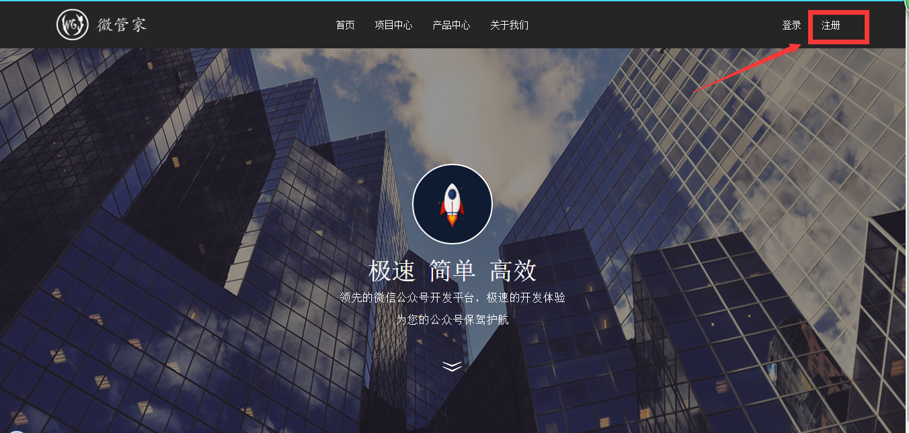
二、输入用户名、密码、确认密码和验证码，阅读并同意微管家注册协议点击注册
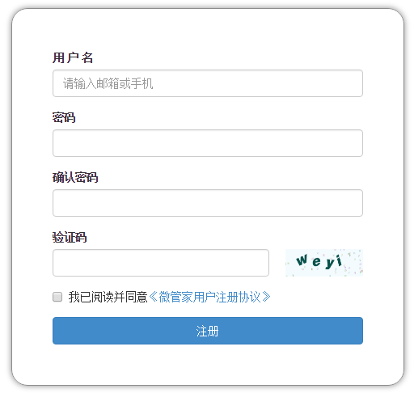
三、注册成功，进入登录页面，输入用户名和密码，点击登录
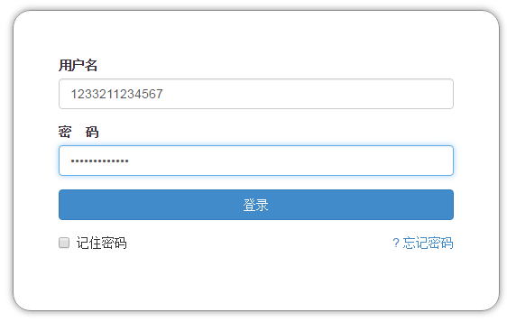>
四、登录成功，进入首页，点击导航栏中的项目中心
五、打开右侧隐藏栏，点击新建项目
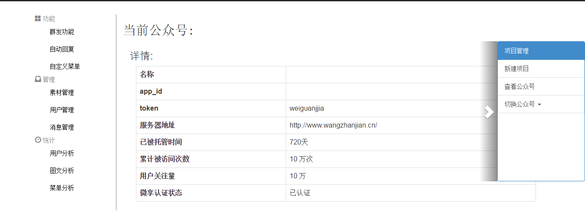
六、填写新建项目中心
进入微信公众平台官网 登录界面，点击左侧菜单 设置-公众号设置，获取公众号名称和公众号原始id。
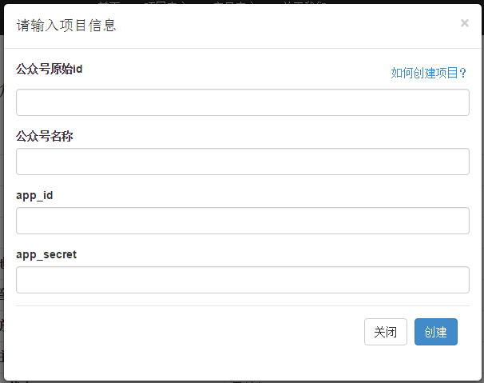>
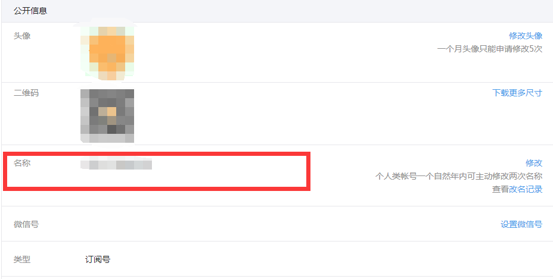
点击左侧菜单 开发-基本配置，获取用户的app_id、 app_secret
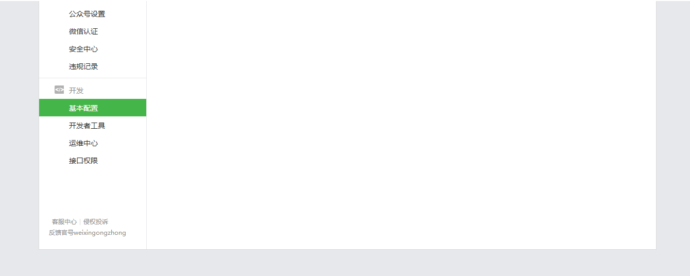
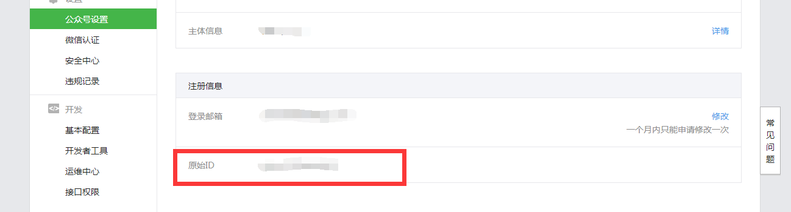
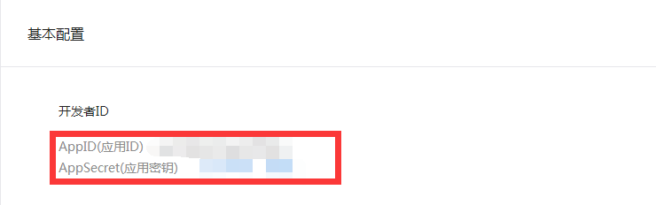>
七、创建信项目成功后点击右侧隐藏栏中的查看公众号
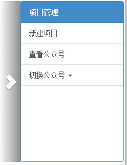>
八、显示当前公众号详情，选择要操作的公众号进行操作，开发或删除
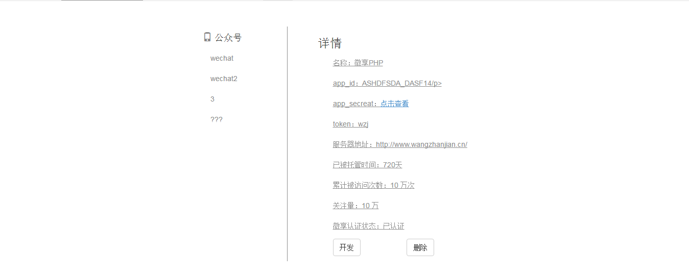
九、进入公众号开发页，选择左侧菜单列表为公众号添加功能、开发公众号
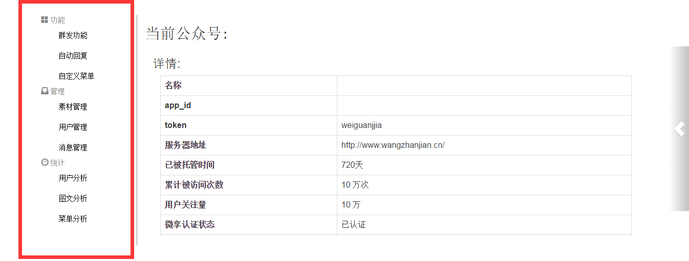
十、点击右侧隐藏菜单 切换公众号进行开发
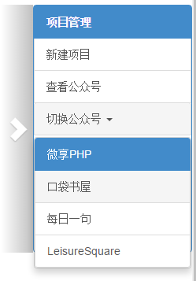>